Show the code
pacman::p_load(sf, spdep, sfdep, tmap, tidyverse, knitr)Testing and locating clusters of GDP per capita in Hunan, 2012
Last week I built spatial weights for Hunan’s 88 counties and saw that a county’s GDP per capita correlates about 0.48 with the average of its neighbours. This exercise puts that hint to a formal test and then goes one step further, from asking whether the province as a whole is clustered to asking where the clusters are.
The analytical question follows the order in the course notes. If development were spread evenly, GDP per capita would show no spatial pattern. If it is not even, the next thing to check is whether similar values sit next to each other, and if they do, which counties form those clusters.
The work is split into three parts. Part 1 covers the global measures, Moran’s I, Geary’s C and spatial correlograms, using spdep. Part 2 computes local Moran’s I, also called LISA, with sfdep to find clusters and outliers. Part 3 uses the Getis-Ord Gi* statistic to find hot spots and cold spots.
Six packages are loaded. sf reads and handles the polygons, spdep computes the global statistics, sfdep wraps spdep in a tidy interface for the local statistics, tmap draws the maps, tidyverse handles the data wrangling and the ggplot2 charts, and knitr is only there for kable().
pacman::p_load(sf, spdep, sfdep, tmap, tidyverse, knitr)The data is the same as in Ex04, so I copied the shapefile into this exercise’s own data/geospatial folder rather than pointing back at the old one.
hunan <- st_read(dsn = "data/geospatial",
layer = "Hunan")Reading layer `Hunan' from data source
`D:\mengtingyu88\geospatial-coursework\Hands-on_Ex\Hands-on_Ex05\data\geospatial'
using driver `ESRI Shapefile'
Simple feature collection with 88 features and 7 fields
Geometry type: POLYGON
Dimension: XY
Bounding box: xmin: 108.7831 ymin: 24.6342 xmax: 114.2544 ymax: 30.12812
Geodetic CRS: WGS 84The layer has 88 polygons in WGS 84 longitude and latitude. Part 1 keeps these coordinates as they are, which is what chapter 9 of the notes does. Chapter 10 projects the layer to UTM zone 50N, and I do that at the start of Part 2 because distance based weights need coordinates in metres.
hunan2012 <- read_csv("data/aspatial/Hunan_2012.csv")hunan <- left_join(hunan, hunan2012, by = "County") %>%
select(NAME_2, ID_3, NAME_3, ENGTYPE_3, County, GDPPC)The notes use left_join(hunan, hunan2012) and select(1:4, 7, 15). I kept the version from last week with an explicit by = "County" and named columns. It returns exactly the same six columns plus geometry, and it does not depend on the column order in the csv.
Both chapters of the notes repeat the import and join. I only do it once here, and Part 2 reuses the same hunan object after projecting it.
The notes draw GDPPC twice, once with equal interval classes and once with quantile classes. The chapter 9 version is written for tmap v3, so I used the tmap v4 code from chapter 10 for both maps.
equal <- tm_shape(hunan) +
tm_polygons(fill = "GDPPC",
fill.scale = tm_scale_intervals(
style = "equal",
n = 5,
values = "brewer.blues"),
fill.legend = tm_legend(
title = "GDPPC",
position = tm_pos_in(
"left", "bottom"))) +
tm_borders(col_alpha = 0.5) +
tm_title("Equal interval classification")
quantile <- tm_shape(hunan) +
tm_polygons(fill = "GDPPC",
fill.scale = tm_scale_intervals(
style = "quantile",
n = 5,
values = "brewer.blues"),
fill.legend = tm_legend(
title = "GDPPC",
position = tm_pos_in(
"left", "bottom"))) +
tm_borders(col_alpha = 0.5) +
tm_title("Quantile interval classification")
tmap_arrange(equal,
quantile,
asp=1,
ncol=2)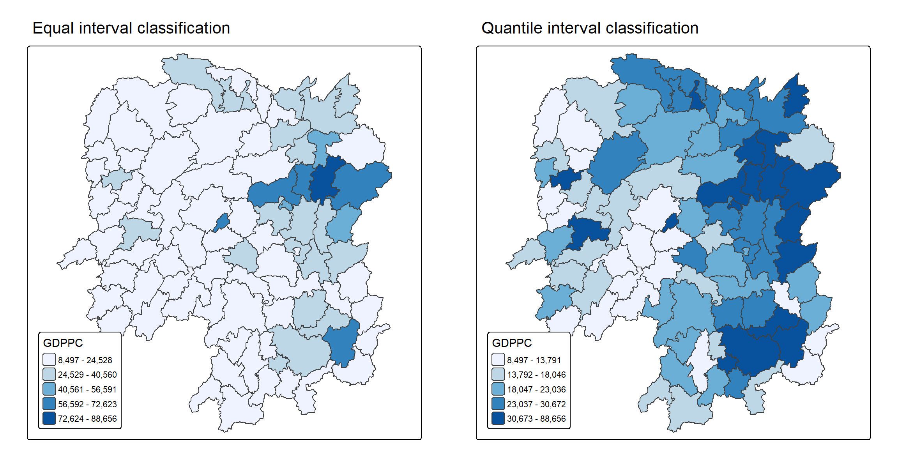
The chapter 9 code has tm_borders(fiil_alpha = 0.5), with a typo, and chapter 10 has tm_borders(fill_alpha = 0.5). Borders are lines and have no fill, so in tmap v4 the transparency of a border is set with col_alpha. I also replaced the chapter 9 tm_layout(main.title = ..., legend.position = ...) with tm_title() and a legend position inside tm_legend(), which is how v4 expects it.
The two maps tell different stories because GDPPC is very skewed. With equal intervals, 58 of the 88 counties fall into the lowest class and only Changsha reaches the top one, so the map mostly points out the few richest counties. The quantile map spreads the counties evenly over five classes and shows the broader contrast between the richer east centre around Changsha and the poorer west.
The notes ask whether the maps reveal outliers, clusters, hot spots or cold spots. By eye there are signs of all of them. The counties around Changsha look like a cluster of high values, and much of the west looks like a cluster of low values. Lengshuijiang in the centre and Zixing in the south east look like outliers, since both are above 60,000 RMB while their neighbours are much poorer. A choropleth map cannot say whether any of this is more than chance, and that is what the rest of the exercise tests.
A global measure gives one number for the whole province. It answers whether counties with similar GDPPC tend to be neighbours more often than a random arrangement would produce.
The first step is the neighbour list. poly2nb() with queen = TRUE treats two counties as neighbours if their boundaries touch at any point.
wm_q <- poly2nb(hunan,
queen=TRUE)
summary(wm_q)Neighbour list object:
Number of regions: 88
Number of nonzero links: 448
Percentage nonzero weights: 5.785124
Average number of links: 5.090909
Link number distribution:
1 2 3 4 5 6 7 8 9 11
2 2 12 16 24 14 11 4 2 1
2 least connected regions:
30 65 with 1 link
1 most connected region:
85 with 11 linksThis is the same queen list as in Ex04. There are 448 links, about 5.09 neighbours per county, and no county without a neighbour. Xinhuang and Linxiang (regions 30 and 65) have only one neighbour because they sit on the provincial border, and Taoyuan (region 85) has eleven.
Each neighbour gets an equal share of the weight, one over the number of neighbours, so that every row sums to 1. This is style = "W". The notes point out the drawback for edge counties like Xinhuang, whose lag is based on a single neighbour, and mention binary weights as an alternative.
rswm_q <- nb2listw(wm_q,
style="W",
zero.policy = TRUE)
rswm_qCharacteristics of weights list object:
Neighbour list object:
Number of regions: 88
Number of nonzero links: 448
Percentage nonzero weights: 5.785124
Average number of links: 5.090909
Weights style: W
Weights constants summary:
n nn S0 S1 S2
W 88 7744 88 37.86334 365.9147S0, the sum of all weights, is 88 because each of the 88 rows sums to 1. S1 and S2 are the sums of squared weights that the variance formulas of Moran’s I and Geary’s C use.
style can be "W" (row standardised), "B" (binary), "C" (globally standardised), "U" (C divided by the number of neighbours), "minmax" and "S" (the variance stabilising scheme of Tiefelsdorf et al.). zero.policy = TRUE lets counties without neighbours through with a lag of zero. Queen contiguity for Hunan has no such county, so the argument changes nothing here.
moran.test() compares the observed Moran’s I with its expected value under spatial randomness. The null hypothesis is that GDPPC is randomly distributed across the counties.
moran.test(hunan$GDPPC,
listw=rswm_q,
zero.policy = TRUE,
na.action=na.omit)
Moran I test under randomisation
data: hunan$GDPPC
weights: rswm_q
Moran I statistic standard deviate = 4.7351, p-value = 1.095e-06
alternative hypothesis: greater
sample estimates:
Moran I statistic Expectation Variance
0.300749970 -0.011494253 0.004348351 The course asks what statistical conclusion this supports. Moran’s I is 0.301, well above its expected value of -0.011 under randomness, and the standard deviate of 4.74 gives a p-value of about 0.000001. That is far below 0.05, so I reject the null hypothesis. GDPPC in Hunan shows positive spatial autocorrelation, meaning counties tend to have neighbours with similar GDP per capita.
The heading says “under randomisation”, which is the default. It means the variance is worked out by treating the observed 88 values as fixed and asking how Moran’s I would vary if they were shuffled across the counties. It does not assume GDPPC is normally distributed, which suits a variable this skewed.
The permutation test does that shuffling directly. It reassigns the 88 GDPPC values to random counties 999 times, recomputes Moran’s I each time and checks where the observed value ranks.
set.seed(1234)
bperm= moran.mc(hunan$GDPPC,
listw=rswm_q,
nsim=999,
zero.policy = TRUE,
na.action=na.omit)
bperm
Monte-Carlo simulation of Moran I
data: hunan$GDPPC
weights: rswm_q
number of simulations + 1: 1000
statistic = 0.30075, observed rank = 1000, p-value = 0.001
alternative hypothesis: greaterThe observed statistic ranks 1000th out of 1000, above every one of the 999 simulated values. The p-value of 0.001 is the smallest this test can give with 999 simulations, so the true p-value could be even lower. The conclusion matches the analytical test, and the clustering is significant at the 0.1 percent level.
The simulated values are stored in bperm$res. The first 999 are the simulations and the last one is the observed statistic, so I summarise only the first 999.
mean(bperm$res[1:999])[1] -0.01504572var(bperm$res[1:999])[1] 0.004371574summary(bperm$res[1:999]) Min. 1st Qu. Median Mean 3rd Qu. Max.
-0.18339 -0.06168 -0.02125 -0.01505 0.02611 0.27593 hist(bperm$res,
freq=TRUE,
breaks=20,
xlab="Simulated Moran's I")
abline(v=0,
col="red") 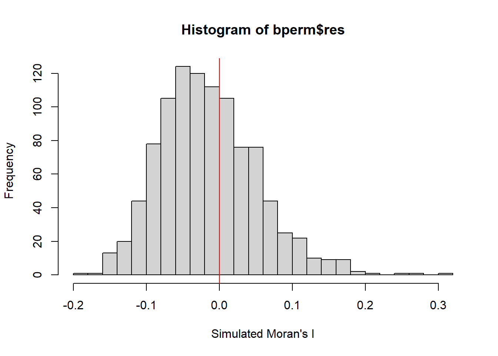
The course asks what the histogram shows. The simulated values centre on about -0.015, close to the theoretical expectation of -1/(n-1) = -0.011, and their variance of 0.00437 is almost the same as the analytical variance of 0.00435. So the permutation test and the analytical test describe the same null distribution. The simulated values run from -0.183 to 0.276, and the observed 0.301 lies beyond the largest one. The histogram is slightly skewed to the right, with the mean sitting above the median of -0.021.
For the ggplot2 version I put the 999 simulated values into a tibble and added a second line for the observed statistic, which the base plot leaves out. That makes the gap between the two easy to see.
sim_moran <- tibble(sim_I = bperm$res[1:999])
ggplot(sim_moran, aes(x = sim_I)) +
geom_histogram(bins = 20,
fill = "grey75",
colour = "white") +
geom_vline(xintercept = 0,
colour = "red") +
geom_vline(xintercept = bperm$statistic,
colour = "red",
linetype = "dashed") +
annotate("text",
x = bperm$statistic,
y = Inf,
label = paste0("Observed I = ", round(bperm$statistic, 3)),
hjust = 1.05,
vjust = 1.5,
size = 3.5) +
labs(x = "Simulated Moran's I",
y = "Frequency",
title = "999 permutations of GDPPC across Hunan's counties") +
theme_minimal()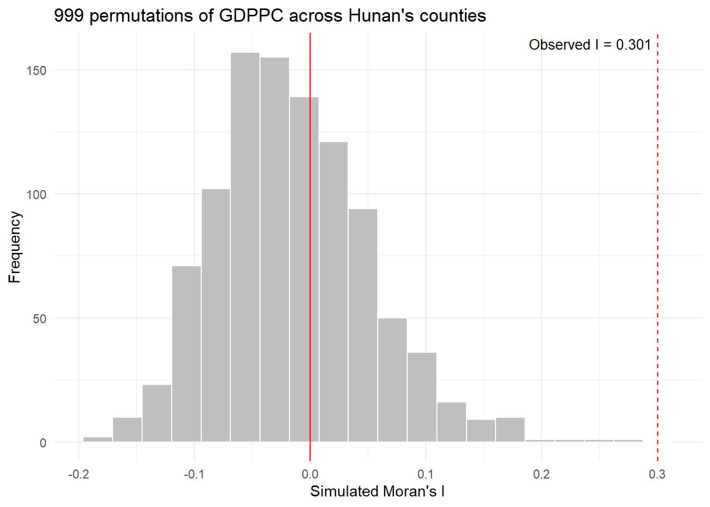
quantile(bperm$res[1:999], c(0.95, 0.99)) 95% 99%
0.1016920 0.1637899 The 95th and 99th percentiles of the simulations are 0.102 and 0.164. The observed 0.301 is almost twice the 99th percentile.
Geary’s C looks at the squared differences between neighbouring values instead of their products. It runs on an inverted scale compared with Moran’s I. A value of 1 means no autocorrelation, values below 1 mean neighbours are similar, and values above 1 mean neighbours are dissimilar.
geary.test(hunan$GDPPC, listw=rswm_q)
Geary C test under randomisation
data: hunan$GDPPC
weights: rswm_q
Geary C statistic standard deviate = 3.6108, p-value = 0.0001526
alternative hypothesis: Expectation greater than statistic
sample estimates:
Geary C statistic Expectation Variance
0.6907223 1.0000000 0.0073364 Geary’s C is 0.691, below its expected value of 1, and the p-value is 0.00015. I reject the null hypothesis of spatial randomness. Neighbouring counties have more similar GDPPC than chance would produce, which agrees with Moran’s I. The alternative hypothesis line reads “Expectation greater than statistic” because for Geary’s C, positive autocorrelation shows up as a statistic smaller than 1.
I saved the Geary permutation result as gperm. The notes reuse the name bperm, which overwrites the Moran result, and I wanted to keep both.
set.seed(1234)
gperm=geary.mc(hunan$GDPPC,
listw=rswm_q,
nsim=999)
gperm
Monte-Carlo simulation of Geary C
data: hunan$GDPPC
weights: rswm_q
number of simulations + 1: 1000
statistic = 0.69072, observed rank = 1, p-value = 0.001
alternative hypothesis: greaterThe observed C ranks 1st out of 1000, lower than all 999 simulations, and the p-value is 0.001. That is again the smallest value possible with 999 simulations, and it confirms significant positive spatial autocorrelation.
At first the output looked contradictory to me, since the alternative hypothesis is “greater” and yet the observed value ranks lowest. In geary.mc(), “greater” refers to positive spatial autocorrelation, and for Geary’s C that means a small statistic. So rank 1 is the extreme end for this alternative.
mean(gperm$res[1:999])[1] 1.004402var(gperm$res[1:999])[1] 0.007436493summary(gperm$res[1:999]) Min. 1st Qu. Median Mean 3rd Qu. Max.
0.7142 0.9502 1.0052 1.0044 1.0595 1.2722 hist(gperm$res, freq=TRUE, breaks=20, xlab="Simulated Geary c")
abline(v=1, col="red") 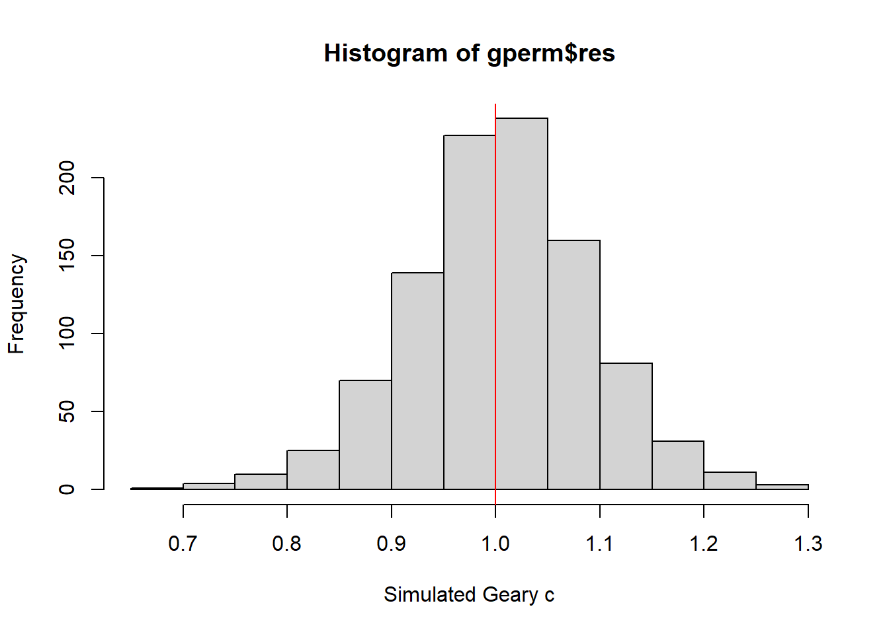
The simulated values centre on 1.004, right at the expected value of 1 under randomness, and range from 0.714 to 1.272. The observed 0.691 sits below the lowest simulated value. The shape is close to symmetric, since the mean and median, 1.004 and 1.005, are almost equal.
I made the ggplot2 version for Geary’s C as well, so both permutation tests can be read the same way.
tibble(sim_C = gperm$res[1:999]) %>%
ggplot(aes(x = sim_C)) +
geom_histogram(bins = 20,
fill = "grey75",
colour = "white") +
geom_vline(xintercept = 1,
colour = "red") +
geom_vline(xintercept = gperm$statistic,
colour = "red",
linetype = "dashed") +
annotate("text",
x = gperm$statistic,
y = Inf,
label = paste0("Observed C = ", round(gperm$statistic, 3)),
hjust = -0.05,
vjust = 1.5,
size = 3.5) +
labs(x = "Simulated Geary's C",
y = "Frequency",
title = "999 permutations of GDPPC across Hunan's counties") +
theme_minimal()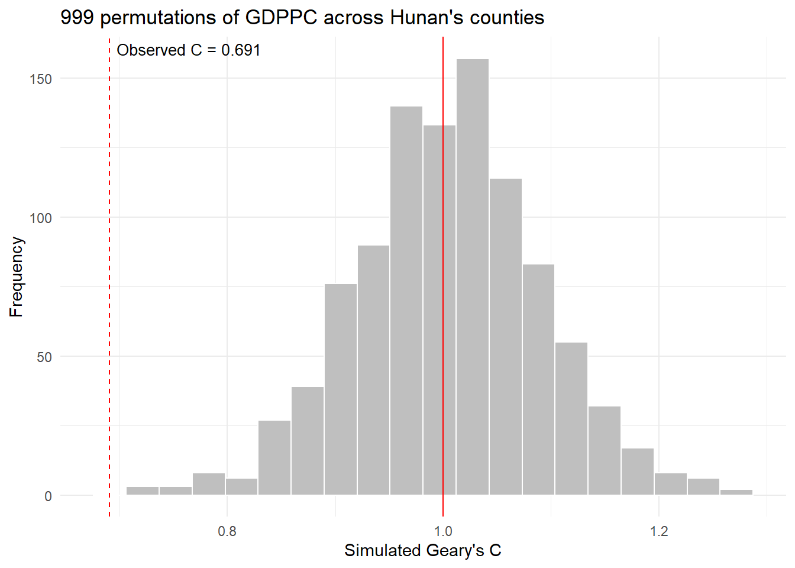
A correlogram repeats the global statistic at increasing lag orders. Lag 1 compares each county with its direct neighbours, lag 2 with the neighbours of its neighbours, and so on. It shows how far the similarity between counties reaches.
sp.correlogram() computes Moran’s I for lags 1 to 6 on the queen list.
MI_corr <- sp.correlogram(wm_q,
hunan$GDPPC,
order=6,
method="I",
style="W")
plot(MI_corr)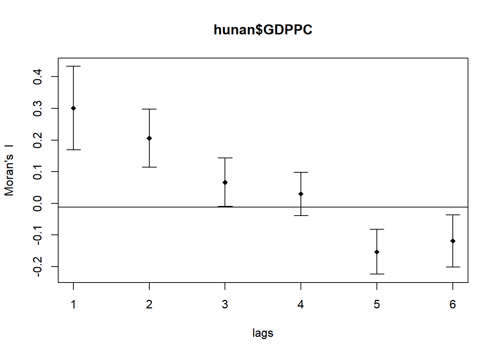
The plot shows each estimate with a bar of two standard deviations, but it does not show which lags are significant, so the printed report is needed as well.
print(MI_corr)Spatial correlogram for hunan$GDPPC
method: Moran's I
estimate expectation variance standard deviate Pr(I) two sided
1 (88) 0.3007500 -0.0114943 0.0043484 4.7351 2.189e-06 ***
2 (88) 0.2060084 -0.0114943 0.0020962 4.7505 2.029e-06 ***
3 (88) 0.0668273 -0.0114943 0.0014602 2.0496 0.040400 *
4 (88) 0.0299470 -0.0114943 0.0011717 1.2107 0.226015
5 (88) -0.1530471 -0.0114943 0.0012440 -4.0134 5.984e-05 ***
6 (88) -0.1187070 -0.0114943 0.0016791 -2.6164 0.008886 **
---
Signif. codes: 0 '***' 0.001 '**' 0.01 '*' 0.05 '.' 0.1 ' ' 1The course asks what the correlogram shows. Moran’s I is strongly positive at lag 1 (0.301) and lag 2 (0.206), both with p-values around 0.000002. At lag 3 it drops to 0.067 and is only just significant at the 5 percent level, and at lag 4 it is not significant at all. At lags 5 and 6 it turns negative, -0.153 and -0.119, and both are significant.
So nearby counties are similar, and counties five or six steps apart tend to be different. That fits the map. Five or six contiguity steps from the Changsha area reach well into the west and south west, so at that distance a rich county is often being compared with a poor one. The positive autocorrelation at short range and negative autocorrelation at long range point to a province wide contrast between east and west.
sapply(nblag(wm_q, 6), function(x) round(mean(card(x)), 1))[1] 5.1 10.0 13.5 15.8 14.6 11.9Every county has neighbours at all six orders, and the average number of pairs per county grows from 5.1 at lag 1 to 15.8 at lag 4 before falling to 11.9 at lag 6. The fall at higher lags is expected, since counties near the edge run out of counties to reach.
GC_corr <- sp.correlogram(wm_q,
hunan$GDPPC,
order=6,
method="C",
style="W")
plot(GC_corr)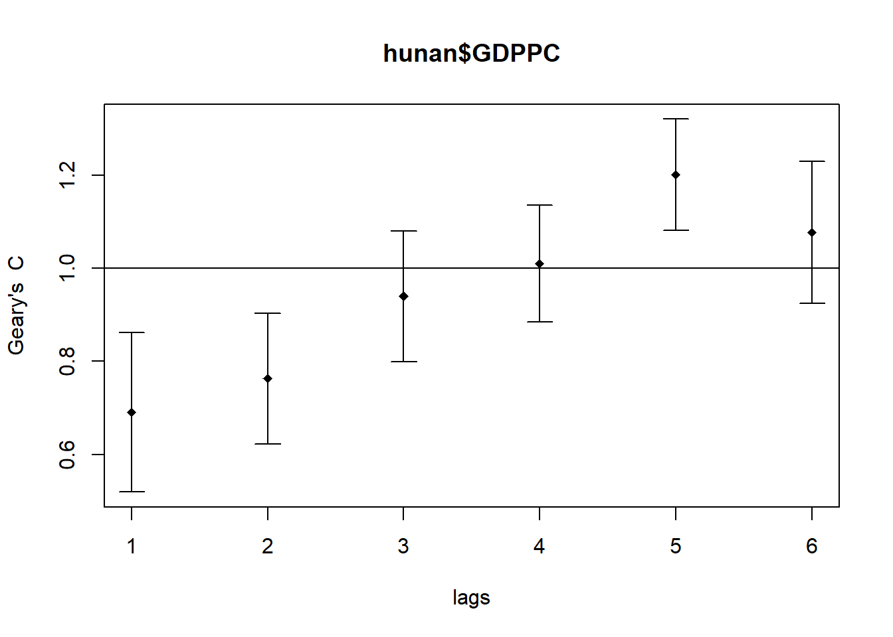
print(GC_corr)Spatial correlogram for hunan$GDPPC
method: Geary's C
estimate expectation variance standard deviate Pr(I) two sided
1 (88) 0.6907223 1.0000000 0.0073364 -3.6108 0.0003052 ***
2 (88) 0.7630197 1.0000000 0.0049126 -3.3811 0.0007220 ***
3 (88) 0.9397299 1.0000000 0.0049005 -0.8610 0.3892612
4 (88) 1.0098462 1.0000000 0.0039631 0.1564 0.8757128
5 (88) 1.2008204 1.0000000 0.0035568 3.3673 0.0007592 ***
6 (88) 1.0773386 1.0000000 0.0058042 1.0151 0.3100407
---
Signif. codes: 0 '***' 0.001 '**' 0.01 '*' 0.05 '.' 0.1 ' ' 1The Geary correlogram tells a similar story on its inverted scale. C is 0.691 at lag 1 and 0.763 at lag 2, both significantly below 1. Lags 3 and 4 are close to 1 and not significant. At lag 5 C rises to 1.201 and is significant, which means counties at that distance are more different than chance.
The two correlograms disagree only at lag 6. Moran’s I is still significantly negative there (p = 0.009), while Geary’s C of 1.077 is not significant (p = 0.31). Moran’s I measures whether pairs of values fall on the same side of the provincial mean, and Geary’s C measures how large the differences within each pair are. At lag 6 the pairs still tend to fall on opposite sides of the mean, but the differences themselves are not large enough for Geary’s C to pick up.
The last column of the Geary printout is headed Pr(I) two sided. It is the p-value for Geary’s C, and the header is simply reused from the Moran version of the function.
Moran’s I and Geary’s C both reject spatial randomness with p-values far below 0.05, so GDP per capita in Hunan is clustered. The permutation tests give the same answer as the analytical ones without assuming a distribution, and the correlograms add the range of the effect. Similarity holds for about two contiguity steps and reverses at five, which fits one rich core in the east and a poorer west. A single global number cannot say where those clusters are, and that is the job of Part 2.
Local measures give every county its own statistic. Local Moran’s I compares each county with its neighbours and flags significant clusters of high or low values, as well as outliers that differ from their surroundings. The global Moran’s I from Part 1 is the average of these local values when row-standardised weights are used, so the two are directly linked.
Chapter 10 transforms the layer from WGS 84 to UTM zone 50N (EPSG 32650) so that coordinates and distances are in metres. The join is already done, so I only need to transform the existing hunan object.
hunan <- hunan %>%
st_transform(crs = 32650)
st_crs(hunan)$epsg[1] 32650sfdep stores the neighbour list and weights as columns in the sf data frame. st_contiguity() builds the queen list and st_weights() turns it into row-standardised weights.
wm_q <- hunan %>%
mutate(nb = st_contiguity(geometry),
wt = st_weights(
nb, style = "W"),
.before = 1) mutate() writes nb and wt back into the table, and .before = 1 puts them in the first two columns. This replaces the spdep wm_q from Part 1 with an sf data frame of the same name.
summary(wm_q$nb)Neighbour list object:
Number of regions: 88
Number of nonzero links: 448
Percentage nonzero weights: 5.785124
Average number of links: 5.090909
Link number distribution:
1 2 3 4 5 6 7 8 9 11
2 2 12 16 24 14 11 4 2 1
2 least connected regions:
30 65 with 1 link
1 most connected region:
85 with 11 linksThe summary is identical to Part 1, with 448 links and the same least and most connected counties. That is expected, because contiguity depends only on which polygons touch, and projecting the coordinates does not change that.
st_weights() calls nb2listw() inside, so it has the same style options described in Part 1. Its allow_zero argument does what zero.policy does in spdep, giving counties without neighbours a lag of zero. The notes repeat the full note on nb2listw() here, which I already covered above.
local_moran() computes local Moran’s I for every county. With nsim = 99 it also runs a permutation test for each county by shuffling the other values around it 99 times.
set.seed(1234)
lisa <- wm_q %>%
mutate(local_moran = local_moran(
GDPPC, nb, wt, nsim = 99),
.before = 1) %>%
unnest(local_moran)glimpse(lisa)Rows: 88
Columns: 21
$ ii <dbl> -1.468468e-03, 2.587817e-02, -1.198765e-02, 1.022468e-03,…
$ eii <dbl> 1.472724e-03, -1.337157e-02, 2.542108e-03, -9.522978e-05,…
$ var_ii <dbl> 5.187992e-04, 1.413972e-02, 1.109689e-01, 4.768012e-06, 1…
$ z_ii <dbl> -0.12912898, 0.33007787, -0.04361717, 0.51186518, 0.33919…
$ p_ii <dbl> 8.972556e-01, 7.413411e-01, 9.652096e-01, 6.087454e-01, 7…
$ p_ii_sim <dbl> 0.80, 0.98, 0.92, 0.56, 0.58, 0.86, 0.06, 0.12, 0.02, 0.2…
$ p_folded_sim <dbl> 0.40, 0.49, 0.46, 0.28, 0.29, 0.43, 0.03, 0.06, 0.01, 0.1…
$ skewness <dbl> -1.0560692, -1.0439328, 0.8429629, 0.8423923, 1.3810032, …
$ kurtosis <dbl> 1.31492710, 0.76654076, 0.12251048, 0.37514702, 2.3883407…
$ mean <fct> Low-High, Low-Low, High-Low, High-High, High-High, High-L…
$ median <fct> High-High, High-High, High-High, High-High, High-High, Hi…
$ pysal <fct> Low-High, Low-Low, High-Low, High-High, High-High, High-L…
$ nb <nb> <2, 3, 4, 57, 85>, <1, 57, 58, 78, 85>, <1, 4, 5, 85>, <1,…
$ wt <list> <0.2, 0.2, 0.2, 0.2, 0.2>, <0.2, 0.2, 0.2, 0.2, 0.2>, <0…
$ NAME_2 <chr> "Changde", "Changde", "Changde", "Changde", "Changde", "C…
$ ID_3 <int> 21098, 21100, 21101, 21102, 21103, 21104, 21109, 21110, 2…
$ NAME_3 <chr> "Anxiang", "Hanshou", "Jinshi", "Li", "Linli", "Shimen", …
$ ENGTYPE_3 <chr> "County", "County", "County City", "County", "County", "C…
$ County <chr> "Anxiang", "Hanshou", "Jinshi", "Li", "Linli", "Shimen", …
$ GDPPC <dbl> 23667, 20981, 34592, 24473, 25554, 27137, 63118, 62202, 7…
$ geometry <POLYGON [m]> POLYGON ((22320.48 3301894,..., POLYGON ((35522.9…The notes describe the output columns as Ii, E.Ii, Var.Ii, Z.Ii and Pr(), which are the spdep names. sfdep returns them in lower case and adds a few more. ii, eii, var_ii and z_ii are the local Moran’s I, its expectation, its variance and its standard deviate under randomisation, and p_ii is the analytical p-value that goes with z_ii.
The other columns come from the permutations. p_ii_sim and p_folded_sim are the simulated p-values, and skewness and kurtosis describe the shape of each county’s permutation distribution. The last three, mean, median and pysal, give the quadrant of each county, which the LISA map needs later.
sum(lisa$ii) / nrow(lisa)[1] 0.30075The average of the 88 local values is 0.30075, which is exactly the global Moran’s I from Part 1.
With nsim = 99 the simulated p-value can only take steps of 0.02, and 0.02 is the smallest value it can reach. That is enough to separate counties at the 5 percent level, but it makes p_ii_sim coarse. The notes map the analytical p_ii, and I follow that choice. At the end of this part I compare the two to see how much the choice matters.
tm_shape(lisa) +
tm_polygons(fill = "ii",
fill.scale = tm_scale_intervals(
style = "pretty",
n = 5,
midpoint = 0,
values = "brewer.rd_bu"),
fill.legend = tm_legend(
title = "Local Moran's I",
position = tm_pos_out())) +
tm_borders(col_alpha = 0.5) +
tm_title("Local Moran's I of GDPPC (Queen's method)")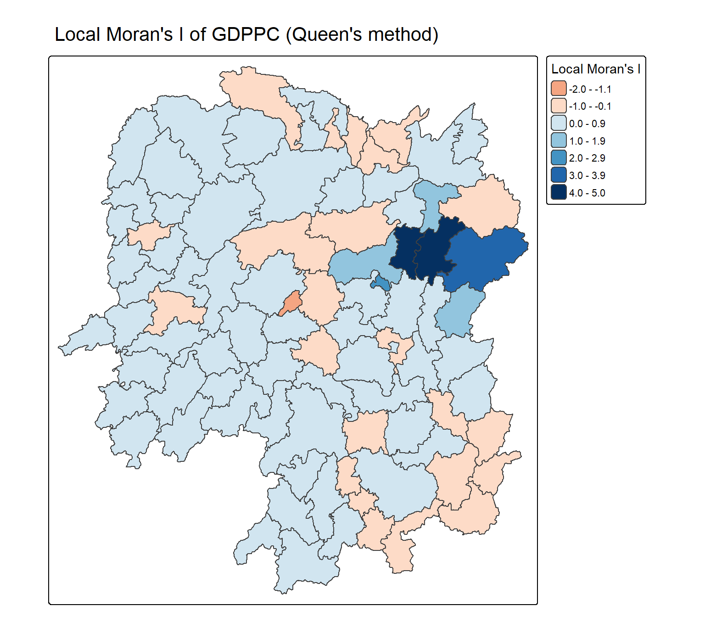
I added midpoint = 0 so that the diverging palette changes colour at zero. Positive local Moran’s I, a county similar to its neighbours, is blue and negative, a county unlike its neighbours, is red. Without it the neutral colour would fall wherever the class breaks put it.
summary(lisa$ii) Min. 1st Qu. Median Mean 3rd Qu. Max.
-1.790335 -0.001717 0.082182 0.300750 0.295899 4.902202 Most counties have a local value near zero, with a median of 0.08. Positive values (64 counties) outnumber negative ones (24). The largest positive values are Changsha (4.90), Wangcheng (4.42) and Liuyang (3.37), rich counties with rich neighbours. The most negative are Lengshuijiang (-1.79), Pingjiang (-0.99) and Zixing (-0.77), each of which differs sharply from its surroundings.
The map of values says nothing about significance. The notes map the p-values next.
tm_shape(lisa) +
tm_polygons(fill = "p_ii",
fill.scale = tm_scale_intervals(
breaks = c(-Inf, 0.001, 0.01, 0.05, 0.1, Inf),
values = "-brewer.reds"),
fill.legend = tm_legend(
title = "p-value",
position = tm_pos_out())) +
tm_borders(col_alpha = 0.5) +
tm_title("p-values of Local Moran's I of GDPPC (Queen's method)")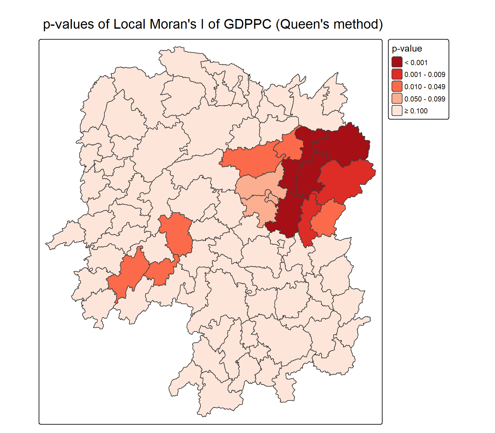
table(cut(lisa$p_ii, c(-Inf, 0.001, 0.01, 0.05, 0.1, Inf)))
(-Inf,0.001] (0.001,0.01] (0.01,0.05] (0.05,0.1] (0.1, Inf]
5 2 6 3 72 Only 13 counties have a p-value below 0.05, and 72 are above 0.1. The darkest counties are concentrated around Changsha and Xiangtan.
ii.map <- tm_shape(lisa) +
tm_polygons(fill = "ii",
fill.scale = tm_scale_intervals(
style = "pretty",
n = 5,
midpoint = 0,
values = "brewer.rd_bu"),
fill.legend = tm_legend(
title = "Local Moran's I",
position = tm_pos_in(
"left", "bottom"))) +
tm_borders(col_alpha = 0.5) +
tm_title("Local Moran's I of GDPPC (Queen's method)")
p_ii.map <- tm_shape(lisa) +
tm_polygons(fill = "p_ii",
fill.scale = tm_scale_intervals(
breaks = c(-Inf, 0.001, 0.01, 0.05, 0.1, Inf),
values = "-brewer.reds"),
fill.legend = tm_legend(
title = "p-value",
position = tm_pos_in("left", "bottom")
)) +
tm_borders(col_alpha = 0.5) +
tm_title("p-values of Local Moran's I of GDPPC (Queen's method)")
tmap_arrange(ii.map, p_ii.map, asp=1, ncol=2)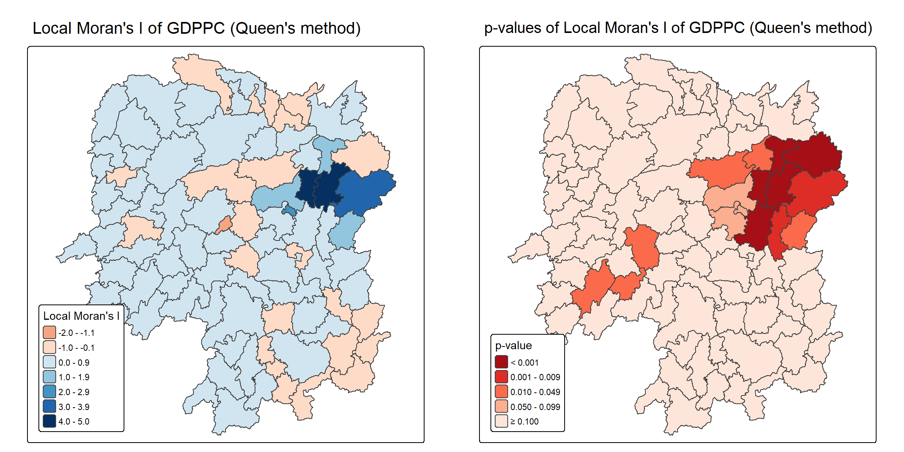
Side by side, the large positive values around Changsha line up with the smallest p-values. The two most negative counties do not line up. Lengshuijiang has the most negative value in the province but a p-value of 0.24, and Zixing’s p-value is 0.51.
lisa %>%
st_drop_geometry() %>%
mutate(n_nb = lengths(nb)) %>%
filter(County %in% c("Lengshuijiang", "Zixing", "Xiangtan", "Zhuzhou")) %>%
select(County, n_nb, GDPPC, ii, var_ii, z_ii, p_ii) %>%
kable(digits = 4)| County | n_nb | GDPPC | ii | var_ii | z_ii | p_ii |
|---|---|---|---|---|---|---|
| Zixing | 7 | 65706 | -0.7685 | 1.0575 | -0.6562 | 0.5117 |
| Lengshuijiang | 3 | 64257 | -1.7903 | 2.4351 | -1.1822 | 0.2371 |
| Zhuzhou | 6 | 27589 | 0.3286 | 0.0106 | 3.1396 | 0.0017 |
| Xiangtan | 9 | 27060 | 0.2453 | 0.0034 | 4.3365 | 0.0000 |
The table explains it. Lengshuijiang has only three neighbours and a very unusual value of its own, so its local statistic has a large variance (2.44), and a value of -1.79 is only 1.18 standard deviations from its expectation. Xiangtan is the opposite case. Its local Moran’s I is only 0.25, but with nine neighbours the variance is tiny (0.003), so it is significant with a p-value of 0.00001. The size of ii alone is a poor guide to significance.
The LISA cluster map shows only the significant counties, coloured by the type of association. To get there, each county first needs a quadrant, which comes from the Moran scatterplot.
A Moran scatterplot puts each county’s value on the x axis and the average of its neighbours, the spatial lag, on the y axis. st_lag() computes the lag from nb and wt.
lisa <- lisa %>%
mutate(lag_GDPPC = st_lag(
GDPPC, nb, wt),
.before = 1) %>%
unnest(lag_GDPPC)ggplot(data = lisa,
aes(x = GDPPC,
y = lag_GDPPC)) +
geom_point() +
geom_smooth(method = "lm",
se = FALSE,
color = "red") +
labs(x = "GDPPC",
y = "Spatial Lag of GDPPC",
title = "Moran Scatterplot") +
theme_minimal()
coef(lm(lag_GDPPC ~ GDPPC, data = lisa))(Intercept) GDPPC
16942.28637 0.30075 The slope of the red line is 0.30075, the same as the global Moran’s I. The point far to the right is Changsha at 88,656 RMB.
The plain version does not show which quadrant each county belongs to. The notes colour the points with the mean column and add dashed lines at the means.
ggplot(data = lisa,
aes(x = GDPPC,
y = lag_GDPPC,
color = mean)) +
geom_point(size = 2) +
geom_smooth(method = "lm",
se = FALSE,
color = "black") +
geom_hline(yintercept=mean(lisa$lag_GDPPC), lty=2) +
geom_vline(xintercept=mean(lisa$GDPPC), lty=2) +
scale_color_manual(
values = c("High-High" = "red",
"Low-Low" = "blue",
"Low-High" = "lightblue",
"High-Low" = "pink")) +
labs(x = "GDPPC",
y = "Spatial Lag of GDPPC",
title = "Moran Scatterplot with LISA Quadrants") +
theme_minimal()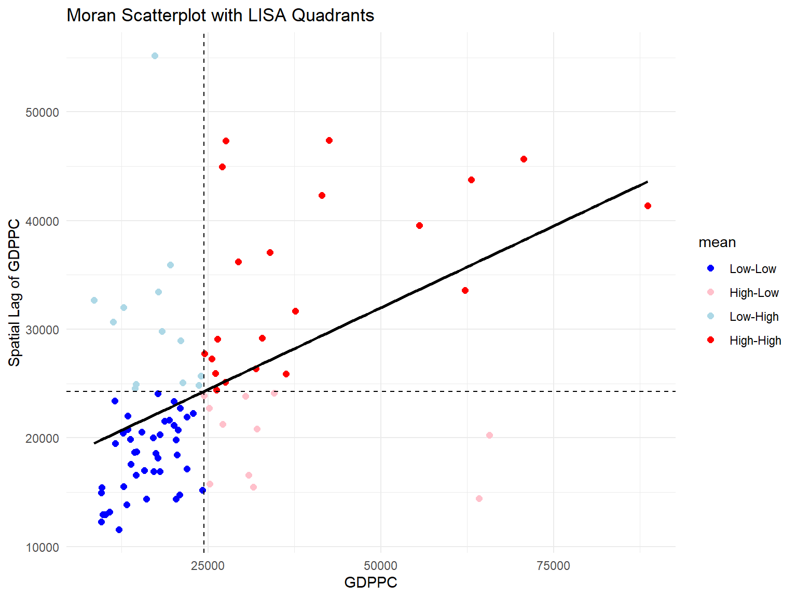
The note under this plot says the top right quadrant holds counties with high GDPPC surrounded by areas with the average level of GDPPC. The quadrant actually holds counties above the provincial mean whose neighbours are also above the mean on average. Those are the High-High counties, and their neighbours are richer than average.
table(lisa$mean)
Low-Low High-Low Low-High High-High
43 11 13 21 Before any significance test, 43 counties are Low-Low, 21 High-High, 13 Low-High and 11 High-Low. So about 73 percent of counties sit in the two quadrants that show positive association, which is why the global Moran’s I is positive.
scale() centres a variable on its mean and divides by its standard deviation. The notes mention adding as.vector() so the result is a plain vector, but the code leaves it out. scale() returns a one column matrix, so I added as.vector() to both.
lisa <- lisa %>%
mutate(z_GDPPC = as.vector(scale(GDPPC)),
z_lag_GDPPC = as.vector(scale(lag_GDPPC)),
.before = 1)ggplot(data = lisa,
aes(x = z_GDPPC,
y = z_lag_GDPPC,
color = mean)) +
geom_point(size = 2) +
geom_smooth(method = "lm",
se = FALSE,
color = "black") +
geom_hline(yintercept=mean(lisa$z_lag_GDPPC), lty=2) +
geom_vline(xintercept=mean(lisa$z_GDPPC), lty=2) +
scale_color_manual(
values = c("High-High" = "red",
"Low-Low" = "blue",
"Low-High" = "lightblue",
"High-Low" = "pink")) +
labs(x = "Standardised GDPPC",
y = "Standardised Spatial Lag of GDPPC",
title = "Standardised Moran Scatterplot with LISA Quadrants") +
theme_minimal()
coef(lm(z_lag_GDPPC ~ z_GDPPC, data = lisa)) (Intercept) z_GDPPC
2.589979e-16 4.846051e-01 The slope of this line is 0.485, not 0.301. The code standardises the lag with its own mean and standard deviation, and the slope of one standardised variable on another is their correlation coefficient. For the slope to equal Moran’s I, the lag has to be taken of the standardised variable, as in the version below.
lisa <- lisa %>%
mutate(lag_z_GDPPC = st_lag(z_GDPPC, nb, wt))
ggplot(data = lisa,
aes(x = z_GDPPC,
y = lag_z_GDPPC,
color = mean)) +
geom_point(size = 2) +
geom_smooth(method = "lm",
se = FALSE,
color = "black") +
geom_hline(yintercept = 0, lty = 2) +
geom_vline(xintercept = 0, lty = 2) +
scale_color_manual(
values = c("High-High" = "red",
"Low-Low" = "blue",
"Low-High" = "lightblue",
"High-Low" = "pink")) +
labs(x = "Standardised GDPPC",
y = "Spatial lag of standardised GDPPC",
title = "Moran Scatterplot, lag of the standardised variable") +
theme_minimal()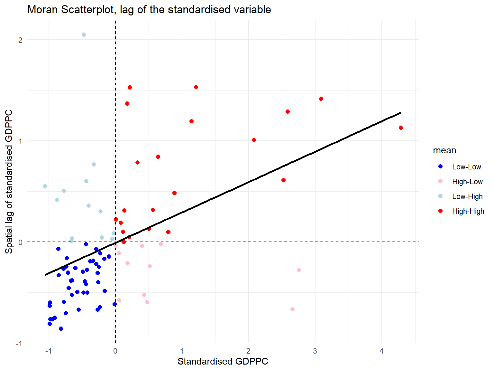
coef(lm(lag_z_GDPPC ~ z_GDPPC, data = lisa)) (Intercept) z_GDPPC
-0.008188169 0.300749970 Now the slope is 0.30075 again, and the dashed lines at zero split the points into the same four colour groups. The vertical spread is smaller than in the previous plot because averaging over neighbours shrinks the variation.
The notes describe the older spdep steps for building the classes, centring GDPPC on its mean, centring the lag, and comparing their signs. sfdep has already done this and stored the result in mean, so there is no code for it in the notes. I rebuilt the classes by hand to check.
z <- lisa$GDPPC - mean(lisa$GDPPC)
lag_z <- st_lag(z, lisa$nb, lisa$wt)
quadrant <- case_when(
z > 0 & lag_z > 0 ~ "High-High",
z < 0 & lag_z < 0 ~ "Low-Low",
z < 0 & lag_z > 0 ~ "Low-High",
z > 0 & lag_z < 0 ~ "High-Low")
all(quadrant == as.character(lisa$mean))[1] TRUEAll 88 match, so mean is the classic quadrant based on the provincial mean. The median column uses the median instead, and since GDPPC is skewed it puts more counties in High-High (31 against 21). pysal matches mean here. I use mean, as the notes do.
Next I set the significance level.
signif <- 0.05 Counties with a p-value below the significance level keep their quadrant, and the rest become “Insignificant”. I used signif in the condition instead of typing 0.05 again.
lisa <- lisa %>%
mutate(
LISA_cluster = ifelse(
p_ii < signif,
as.character(mean),
"Insignificant"),
LISA_cluster = factor(
LISA_cluster,
levels = c("Insignificant", "Low-Low", "Low-High", "High-Low", "High-High")
)
)lisa_map <- tm_shape(lisa) +
tm_polygons(
fill = "LISA_cluster",
fill.scale = tm_scale_categorical(
values = c(
"grey80", # Insignificant
"blue", # Low-Low
"lightblue", # Low-High
"pink", # High-Low
"red" # High-High
)
),
fill.legend = tm_legend(
title = "LISA Cluster",
position = tm_pos_in("left", "bottom"))
) +
tm_borders() +
tm_title("Local Moran's I Clusters (p < 0.05)")
lisa_map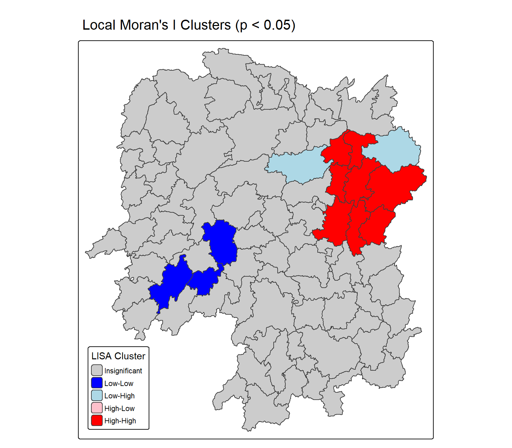
lisa %>%
st_drop_geometry() %>%
filter(LISA_cluster != "Insignificant") %>%
select(LISA_cluster, County, NAME_2, GDPPC, lag_GDPPC, ii, p_ii) %>%
arrange(LISA_cluster, p_ii) %>%
kable(digits = c(0, 0, 0, 0, 0, 3, 5))| LISA_cluster | County | NAME_2 | GDPPC | lag_GDPPC | ii | p_ii |
|---|---|---|---|---|---|---|
| Low-Low | Wugang | Shaoyang | 12112 | 11566 | 0.710 | 0.02999 |
| Low-Low | Longhui | Shaoyang | 9572 | 12297 | 0.808 | 0.03653 |
| Low-Low | Suining | Shaoyang | 16069 | 14383 | 0.376 | 0.03698 |
| Low-High | Pingjiang | Yueyang | 17252 | 55158 | -0.990 | 0.00012 |
| Low-High | Taojiang | Yiyang | 19509 | 35934 | -0.254 | 0.04430 |
| High-High | Xiangtan | Xiangtan | 27060 | 44940 | 0.245 | 0.00001 |
| High-High | Changsha | Changsha | 88656 | 41364 | 4.902 | 0.00002 |
| High-High | Wangcheng | Changsha | 70666 | 45651 | 4.422 | 0.00006 |
| High-High | Miluo | Yueyang | 42497 | 47383 | 1.870 | 0.00098 |
| High-High | Zhuzhou | Zhuzhou | 27589 | 47346 | 0.329 | 0.00169 |
| High-High | Liuyang | Changsha | 63118 | 43747 | 3.369 | 0.00641 |
| High-High | Xiangyin | Yueyang | 33983 | 37058 | 0.545 | 0.02229 |
| High-High | Liling | Zhuzhou | 41491 | 42324 | 1.377 | 0.03668 |
The course asks what can be observed from the LISA map. There are 13 significant counties in three groups.
The High-High cluster has 8 counties in the north east centre, Changsha, Wangcheng and Liuyang in Changsha prefecture, Xiangtan, Zhuzhou and Liling to the south, and Miluo and Xiangyin to the north in Yueyang. This is the Chang-Zhu-Tan core and its northern edge. Xiangtan and Zhuzhou have fairly ordinary GDPPC of their own, 27,060 and 27,589, but they are in the cluster because their neighbours average about 44,900 and 47,300.
The Low-Low cluster has 3 counties, Longhui, Wugang and Suining, all in Shaoyang prefecture in the south west centre. Their own GDPPC ranges from 9,572 to 16,069 and their neighbours average between 11,566 and 14,383.
Two counties are Low-High outliers. Pingjiang has a GDPPC of 17,252 but borders Changsha, Liuyang, Miluo and Yueyang, so its neighbours average 55,158. Taojiang in Yiyang has 19,509 against a neighbour average of 35,934, pulled up by Ningxiang and Wangcheng.
No county is a significant High-Low outlier. Lengshuijiang and Zixing looked like the obvious candidates on the choropleth, and both have High-Low quadrants and negative local Moran’s I, but as the table in the p-value section showed, neither passes the test.
The western part of the province is mostly insignificant, even though almost all of it is in the Low-Low quadrant. Ten of the eleven counties in Huaihua and seven of the eight in Xiangxi are Low-Low, but none of them passes the analytical test at the 5 percent level.
I also put the LISA map next to the quantile map of GDPPC from the start, so the clusters can be compared with the raw values.
tmap_arrange(quantile, lisa_map, asp = 1, ncol = 2)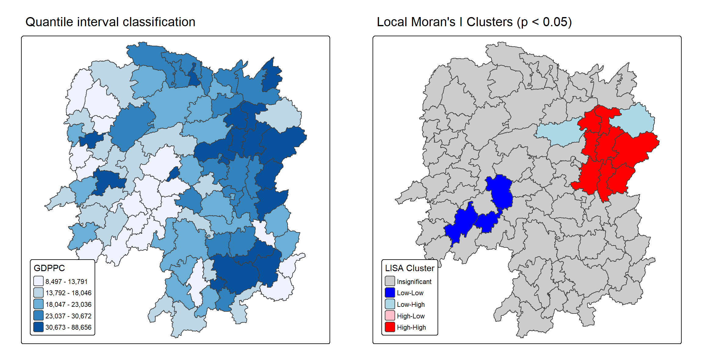
The notes also suggest showing the local Moran’s I map and the p-value map with the LISA map for comparison.
tmap_arrange(ii.map, p_ii.map, lisa_map, asp = 1, ncol = 3)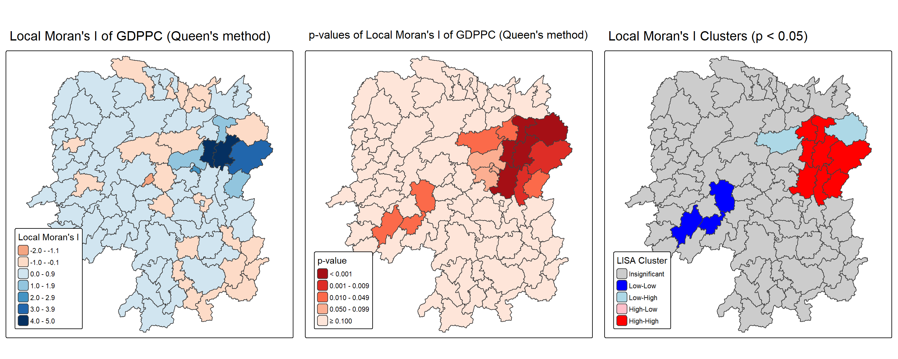
The LISA map above uses p_ii. I also checked which counties would be significant using the permutation p-value p_ii_sim.
table(analytical = lisa$p_ii < signif,
simulated = lisa$p_ii_sim < signif) simulated
analytical FALSE TRUE
FALSE 69 6
TRUE 3 10lisa %>%
st_drop_geometry() %>%
filter(xor(p_ii < signif, p_ii_sim < signif)) %>%
select(County, mean, p_ii, p_ii_sim) %>%
arrange(mean) %>%
kable(digits = 3)| County | mean | p_ii | p_ii_sim |
|---|---|---|---|
| Yuanling | Low-Low | 0.106 | 0.04 |
| Chengbu | Low-Low | 0.129 | 0.04 |
| Dongkou | Low-Low | 0.118 | 0.04 |
| Longshan | Low-Low | 0.137 | 0.04 |
| Shaoyang | Low-Low | 0.134 | 0.02 |
| Shaodong | High-Low | 0.131 | 0.04 |
| Taojiang | Low-High | 0.044 | 0.10 |
| Liuyang | High-High | 0.006 | 0.06 |
| Liling | High-High | 0.037 | 0.10 |
The two agree on 10 significant counties and disagree on 9. Changsha, Wangcheng, Miluo, Xiangyin, Zhuzhou and Xiangtan are High-High under both, and so are the three Low-Low counties in Shaoyang. Liuyang, Liling and Taojiang drop out with the simulated p-values, while five more Low-Low counties in the west, such as Chengbu, Dongkou and Longshan, come in, together with Shaodong as a High-Low outlier.
The skewness column explains the direction of the change. The analytical p-value treats each county’s statistic as normally distributed. The Low-Low counties that come in all have left skewed permutation distributions (skewness around -0.7 to -1.1), so the right tail is short and their positive local Moran’s I is more extreme than the normal curve suggests. Liuyang and Liling have right skewed distributions, which works the other way. The western low cluster is therefore larger than the map above shows.
LISA turned the single global Moran’s I into a map with 13 significant counties, a High-High core around Changsha, Zhuzhou and Xiangtan and a smaller Low-Low group in Shaoyang. The counties that look most extreme on a map are not always the ones the test flags. Lengshuijiang had the most negative local Moran’s I in Hunan and still was not significant, because with three neighbours its statistic is too variable to judge.
A hot spot is a group of high values surrounded by other high values, and a cold spot is the same for low values. The Getis-Ord Gi* statistic tests this by comparing the sum of values in each county’s neighbourhood, including the county itself, with what the provincial total would lead us to expect. Unlike local Moran’s I, it does not separate clusters from outliers. It only says whether a neighbourhood is unusually high or unusually low.
The analysis has four steps, deriving a spatial weight matrix, computing Gi*, mapping it and communicating the result.
LISA used contiguity. For Gi* the notes define neighbours by distance instead, and list three kinds of distance based weights, fixed distance, adaptive distance and inverse distance.
The upper distance limit has to be large enough that every county gets at least one neighbour. critical_threshold() returns the largest nearest neighbour distance in the province.
ct <- critical_threshold(st_geometry(hunan))
ct[1] 60799.91The threshold is 60,800 m, or 60.8 km. This is close to the 62 km band from Ex04 but not the same, because that one used centroids on the WGS 84 ellipsoid and this one uses points in UTM metres.
hunan_fdw <- hunan %>%
mutate(nb = include_self(
st_dist_band(
st_geometry(geometry),
upper = ct)),
wt = st_weights(nb,
style = "W"),
.before = 1) The note in the course is cut off at “include_self() must be used to endure that”. The point is that Gi* includes the county’s own value in its neighbourhood sum, while the plain Gi leaves it out. include_self() adds each county to its own neighbour list, which is what turns the statistic into Gi*. Without it, local_gstar_perm() would effectively compute Gi.
table(lengths(hunan_fdw$nb) - 1)
1 2 3 4 5 6
10 11 17 30 15 5 Excluding the county itself, the number of neighbours within 60.8 km runs from 1 to 6. Ten counties have only one, including large or border counties such as Yuanling, Anhua, Liuyang and Pingjiang, and five small counties such as Jishou and Guzhang have six.
A fixed band gives densely packed areas many neighbours and sparse areas very few. Fixing the number of neighbours instead avoids that. st_knn() gives every county its six nearest neighbours.
hunan_adw <- hunan %>%
mutate(nb = include_self(
st_knn(
st_geometry(geometry),
k = 6)),
wt = st_weights(
nb, style = "W"),
.before = 1)The notes introduce this chunk by saying it computes a fixed distance weight matrix with st_dist_band(), but the code uses st_knn() with k = 6, which is the adaptive version. The same paragraph was copied from the fixed distance section.
table(lengths(hunan_adw$nb))
7
88 Every county now has seven entries, itself plus six neighbours.
The notes list inverse distance as the third type, and the heading appears twice, the second time with no content. I filled that gap with st_inverse_distance() from sfdep, which weights each contiguity neighbour by one over its distance. I set scale = 1000 so that the distances are in kilometres.
hunan_idw <- hunan %>%
mutate(nb = st_contiguity(geometry),
wt = st_inverse_distance(nb,
geometry,
scale = 1000,
alpha = 1),
.before = 1)
round(hunan_idw$wt[[1]], 4)[1] 0.0154 0.0358 0.0217 0.0289 0.0106For Anxiang, the nearest neighbour gets the largest weight and the furthest the smallest. These weights are not row standardised, and the rest of the exercise does not use them. The Gi* analysis in the notes runs on the fixed distance weights, and I add the adaptive version as a comparison.
local_gstar_perm() computes Gi* and a permutation test with 99 simulations. The notes do not set a seed here, so I added set.seed(1234) to make the p-values repeatable.
set.seed(1234)
HCSA_fdw <- hunan_fdw %>%
mutate(
gistar = local_gstar_perm(
GDPPC, nb, wt, nsim = 99),
.before = 1) %>%
unnest(gistar)HCSA_fdw %>%
st_drop_geometry() %>%
select(County, GDPPC, gi_star, cluster, p_value, p_sim) %>%
head() %>%
kable(digits = 4)| County | GDPPC | gi_star | cluster | p_value | p_sim |
|---|---|---|---|---|---|
| Anxiang | 23667 | 0.3831 | Low | 0.6456 | 0.50 |
| Hanshou | 20981 | -0.2728 | Low | 0.8079 | 0.92 |
| Jinshi | 34592 | 0.3641 | High | 0.9848 | 0.80 |
| Li | 24473 | 0.4115 | High | 0.5495 | 0.50 |
| Linli | 25554 | 0.2174 | High | 0.9545 | 0.86 |
| Shimen | 27137 | -0.0594 | High | 0.9346 | 0.88 |
gi_star is already a z-score. Positive values mean the neighbourhood sum is higher than expected and negative values mean it is lower. p_value is the analytical p-value and p_sim comes from the permutations. cluster labels each county High or Low, and I come back to how that label is built further down.
tm_shape(HCSA_fdw) +
tm_polygons(fill = "gi_star",
fill.scale = tm_scale_intervals(
style = "pretty",
n = 6,
midpoint = 0,
values = "-brewer.rd_bu"),
fill.legend = tm_legend(
title = "Gi*",
position = tm_pos_out())) +
tm_borders(col_alpha = 0.5) +
tm_title("Gi* of GDPPC (Fixed Bandwidth d = 60799.91m)")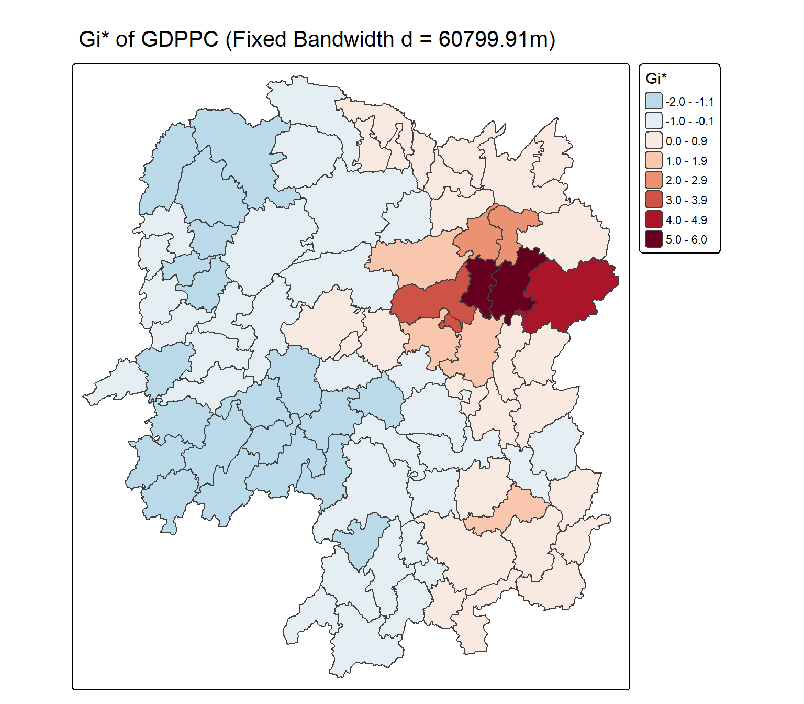
The first Gi* map in the notes uses "brewer.rd_bu", which runs from red for low values to blue for high values. That paints hot spots blue and cold spots red. The side by side map later in the notes uses "-brewer.rd_bu", which reverses it. I used the reversed palette in every Gi* map so that red always means hot, and added midpoint = 0 so the colour changes at zero.
summary(HCSA_fdw$gi_star) Min. 1st Qu. Median Mean 3rd Qu. Max.
-1.830785 -0.942201 -0.375231 -0.003227 0.390171 5.805983 Gi* ranges from -1.83 to 5.81. The positive tail is much longer than the negative one. The highest values are Wangcheng (5.81), Changsha (5.71) and Liuyang (4.91), while the lowest are only around -1.8, in Longhui, Yongshun and Suining. So the rich neighbourhoods stand out much more strongly than the poor ones, which fits a skewed variable where a few counties are far above the mean and many are only a little below it.
tm_shape(HCSA_fdw) +
tm_polygons(fill = "p_sim",
fill.scale = tm_scale_intervals(
breaks = c(-Inf, 0.001, 0.01, 0.05, 0.1, Inf),
values = "-brewer.reds"),
fill.legend = tm_legend(
title = "simulated p-value",
position = tm_pos_out())) +
tm_borders(col_alpha = 0.5) +
tm_title("p-values of local Gi* of GDPPC (Fixed distance)")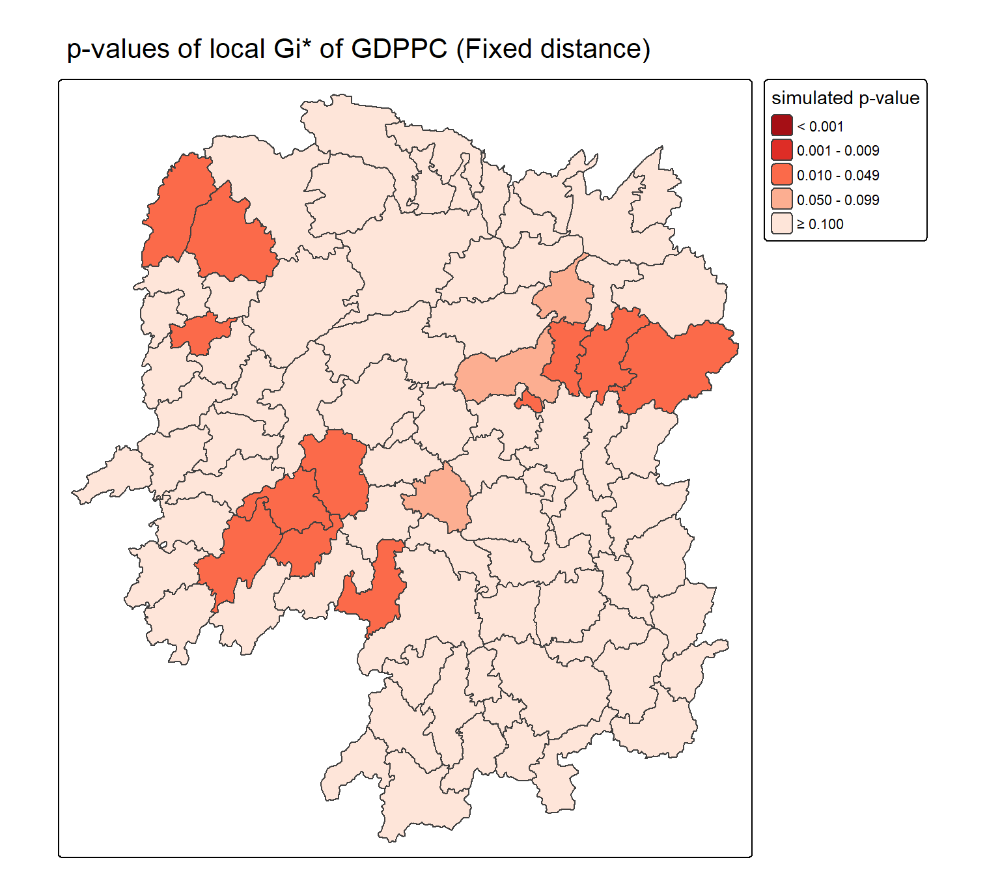
table(cut(HCSA_fdw$p_sim, c(-Inf, 0.001, 0.01, 0.05, 0.1, Inf)))
(-Inf,0.001] (0.001,0.01] (0.01,0.05] (0.05,0.1] (0.1, Inf]
0 0 12 3 73 The two lowest classes of this map are empty. As with LISA, 99 permutations cannot produce a simulated p-value below 0.02, so the darkest colours can never appear. In this run 12 counties have p_sim at or below 0.05.
Gi_star_map <- tm_shape(HCSA_fdw) +
tm_polygons(fill = "gi_star",
fill.scale = tm_scale_intervals(
style = "pretty",
n = 5,
midpoint = 0,
values = "-brewer.rd_bu"),
fill.legend = tm_legend(
title = "local Gi*",
position = tm_pos_in(
"left", "bottom"))) +
tm_borders(col_alpha = 0.5) +
tm_title("Local Gi* of GDPPC")
p_values_map <- tm_shape(HCSA_fdw) +
tm_polygons(fill = "p_sim",
fill.scale = tm_scale_intervals(
breaks = c(0, 0.001, 0.01, 0.05, 0.1, 1),
values = "-brewer.reds"),
fill.legend = tm_legend(
title = "p-value",
position = tm_pos_in("left", "bottom")
)) +
tm_borders(col_alpha = 0.5) +
tm_title("p-values of local Gi* of GDPPC (fixed distance)")
tmap_arrange(Gi_star_map, p_values_map, asp=1, ncol=2)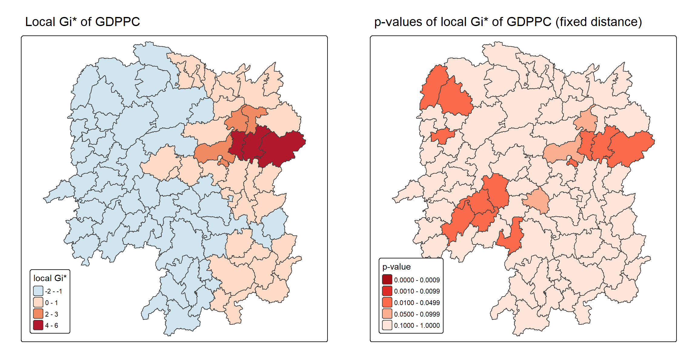
The strongest red on the left lines up with low p-values on the right around Changsha. Several light blue counties in the west also have p-values below 0.05, so they are significant cold spots even though their Gi* values look mild on the colour scale.
The notes build the hot and cold spot classes from p_sim and the cluster column.
HCSA_fdw <- HCSA_fdw %>%
mutate(HCSA_cluster = case_when(
p_sim > 0.05 ~ "Insignificant",
p_sim <= 0.05 & cluster == "High" ~ "Hot spot",
p_sim <= 0.05 & cluster == "Low" ~ "Cold spot",
TRUE ~ "Other"),
HCSA_cluster = factor(
HCSA_cluster,
levels = c("Insignificant", "Hot spot", "Cold spot")
),
.before = 1
)HCSA_map <- tm_shape(HCSA_fdw) +
tm_polygons(
fill = "HCSA_cluster",
fill.scale = tm_scale_categorical(
values = c(
"grey80", # Insignificant
"red", # Hot spot
"blue" # Cold spot
)
),
fill.legend = tm_legend(
title = "HCSA Cluster",
position = tm_pos_in("left", "bottom"))
) +
tm_borders() +
tm_title("HCSA Clusters (p < 0.05)")
HCSA_map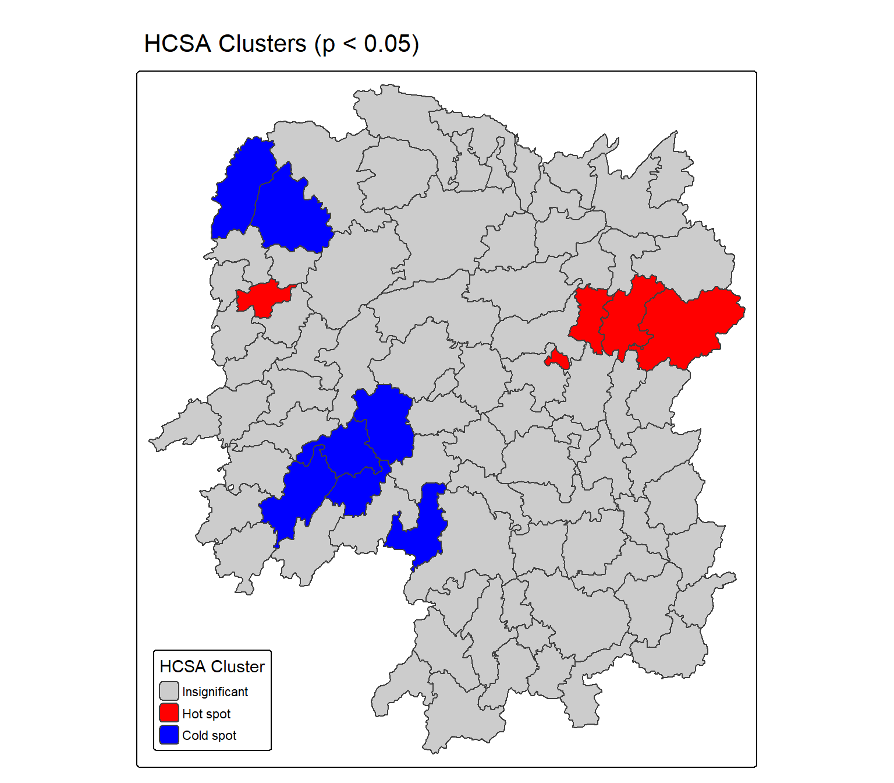
The comments in the notes label red as Low-Low and blue as High-High, left over from the LISA map. I changed them to match the actual levels, red for hot spots and blue for cold spots.
tmap_arrange(Gi_star_map, HCSA_map, asp=1, ncol=2)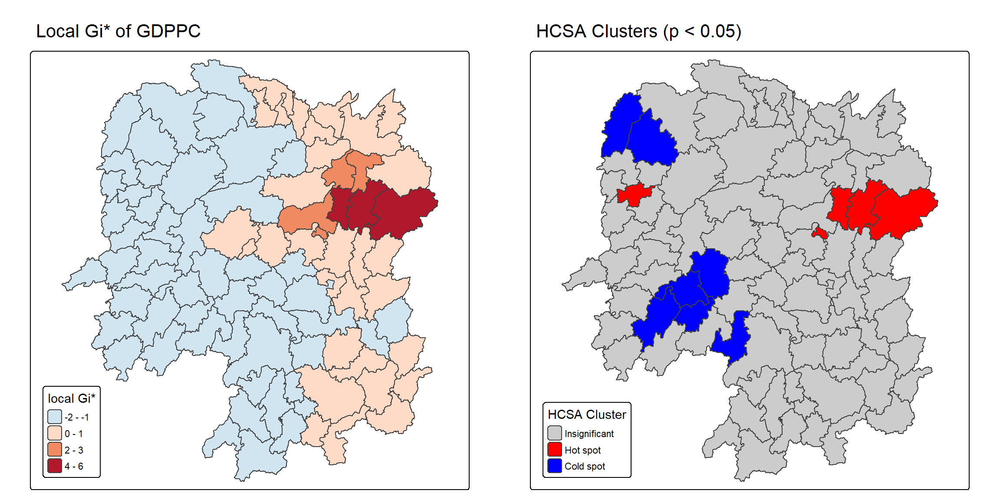
Putting the two maps side by side shows something odd. Jishou in the north west is coloured as a hot spot on the right, but on the left its Gi* is negative.
I checked where cluster comes from. In spdep, localG_perm() builds it by comparing each county’s own GDPPC with the provincial mean, cut(x, c(-Inf, mean(x), Inf), labels = c("Low", "High")). It ignores the neighbourhood, so it does not always agree with the sign of Gi*.
table(cluster = HCSA_fdw$cluster,
gi_star_positive = HCSA_fdw$gi_star > 0) gi_star_positive
cluster FALSE TRUE
Low 45 11
High 6 26In 17 counties the label and the sign disagree. Jishou is one of them. Its own GDPPC of 31,537 is above the mean, so it is labelled High, but the counties around it are poor, so Gi* is -1.27. In this run it is also significant, which puts a cold neighbourhood on the map as a hot spot. A hot spot should be defined by the sign of Gi*.
I rebuilt the classes from the sign of gi_star.
HCSA_fdw <- HCSA_fdw %>%
mutate(HCSA_gi = case_when(
p_sim > 0.05 ~ "Insignificant",
gi_star > 0 ~ "Hot spot",
gi_star < 0 ~ "Cold spot"),
HCSA_gi = factor(
HCSA_gi,
levels = c("Insignificant", "Hot spot", "Cold spot")))HCSA_gi_map <- tm_shape(HCSA_fdw) +
tm_polygons(
fill = "HCSA_gi",
fill.scale = tm_scale_categorical(
values = c("grey80", "red", "blue")),
fill.legend = tm_legend(
title = "HCSA Cluster",
position = tm_pos_in("left", "bottom"))
) +
tm_borders() +
tm_title("HCSA by sign of Gi* (fixed distance)")
tmap_arrange(Gi_star_map, HCSA_gi_map, asp = 1, ncol = 2)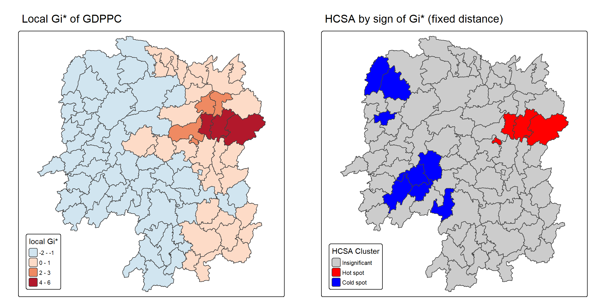
HCSA_fdw %>%
st_drop_geometry() %>%
filter(HCSA_gi != "Insignificant") %>%
select(HCSA_gi, County, NAME_2, GDPPC, gi_star, p_sim) %>%
arrange(HCSA_gi, desc(abs(gi_star))) %>%
kable(digits = 3)| HCSA_gi | County | NAME_2 | GDPPC | gi_star | p_sim |
|---|---|---|---|---|---|
| Hot spot | Wangcheng | Changsha | 70666 | 5.806 | 0.02 |
| Hot spot | Changsha | Changsha | 88656 | 5.711 | 0.02 |
| Hot spot | Liuyang | Changsha | 63118 | 4.912 | 0.04 |
| Hot spot | Shaoshan | Xiangtan | 55570 | 3.772 | 0.04 |
| Cold spot | Longhui | Shaoyang | 9572 | -1.831 | 0.02 |
| Cold spot | Yongshun | Xiangxi Tujia and Miao | 9590 | -1.777 | 0.04 |
| Cold spot | Suining | Shaoyang | 16069 | -1.724 | 0.02 |
| Cold spot | Dongkou | Shaoyang | 13240 | -1.637 | 0.04 |
| Cold spot | Wugang | Shaoyang | 12112 | -1.552 | 0.04 |
| Cold spot | Longshan | Xiangxi Tujia and Miao | 9754 | -1.406 | 0.04 |
| Cold spot | Jishou | Xiangxi Tujia and Miao | 31537 | -1.267 | 0.04 |
| Cold spot | Dongan | Yongzhou | 20901 | -1.218 | 0.04 |
With the fixed distance weights there are 4 hot spots, Liuyang, Wangcheng, Shaoshan, and Changsha. They form one block around Changsha city, with Shaoshan just to the south west.
There are 8 cold spots, Dongan, Dongkou, Longhui, Suining, Wugang, Jishou, Longshan, and Yongshun. They fall in two groups. One runs across western Shaoyang and into Dongan in Yongzhou, and the other is in Xiangxi in the north west. The cold spots have Gi* values of only about -1.2 to -1.8, but they still pass the permutation test.
The notes compute hunan_adw but never use it. I ran the same Gi* on it to see how much the hot and cold spots depend on the choice of weights.
set.seed(1234)
HCSA_adw <- hunan_adw %>%
mutate(
gistar = local_gstar_perm(
GDPPC, nb, wt, nsim = 99),
.before = 1) %>%
unnest(gistar) %>%
mutate(HCSA_gi = case_when(
p_sim > 0.05 ~ "Insignificant",
gi_star > 0 ~ "Hot spot",
gi_star < 0 ~ "Cold spot"),
HCSA_gi = factor(
HCSA_gi,
levels = c("Insignificant", "Hot spot", "Cold spot")))HCSA_adw_map <- tm_shape(HCSA_adw) +
tm_polygons(
fill = "HCSA_gi",
fill.scale = tm_scale_categorical(
values = c("grey80", "red", "blue")),
fill.legend = tm_legend(
title = "HCSA Cluster",
position = tm_pos_in("left", "bottom"))
) +
tm_borders() +
tm_title("HCSA by sign of Gi* (6 nearest neighbours)")
tmap_arrange(HCSA_gi_map, HCSA_adw_map, asp = 1, ncol = 2)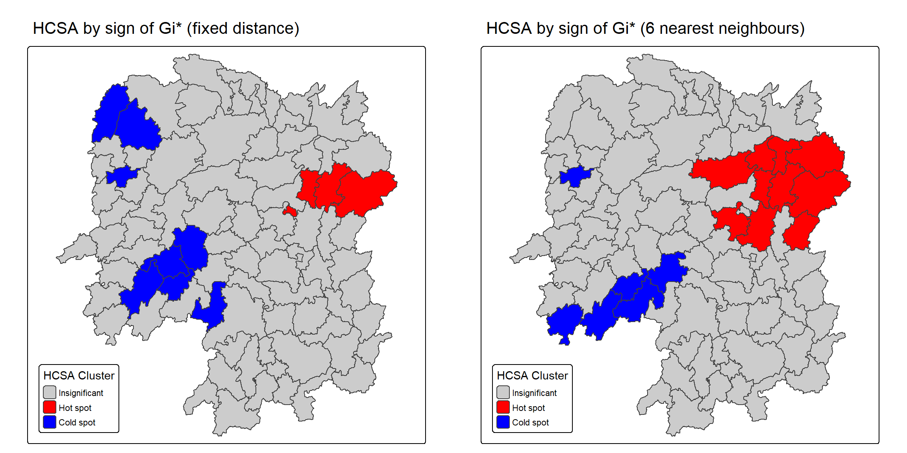
table(fixed = HCSA_fdw$HCSA_gi, adaptive = HCSA_adw$HCSA_gi) adaptive
fixed Insignificant Hot spot Cold spot
Insignificant 65 7 4
Hot spot 1 3 0
Cold spot 6 0 2The adaptive weights give 10 hot spots and 6 cold spots. The hot spot area grows to cover Liuyang, Wangcheng, Xiangxiang, Miluo, Pingjiang, Xiangyin, Liling, Taojiang, Changsha, and Xiangtan. Pingjiang and Taojiang now count as hot spots even though both are poorer than average themselves. Under the fixed band Pingjiang had only one neighbour within 60.8 km, so its own low value dominated its neighbourhood sum. With six neighbours it picks up Changsha, Liuyang and Miluo, and the neighbourhood as a whole is rich.
The cold spots under the adaptive weights are Tongdao, Chengbu, Wugang, Xinning, Jishou, and Shaoyang. Wugang and Jishou are cold spots under both, and the rest of the cold area shifts to a belt running from Tongdao on the south western edge through Chengbu and Xinning to Shaoyang county. With six neighbours each, some edge counties have to reach a long way, and the sixth neighbour of Tongdao and Jiangyong is more than 100 km away.
Both methods are run on the same data, so I cross tabulated the LISA clusters from Part 2 with the fixed distance hot and cold spots.
table(LISA = lisa$LISA_cluster, HCSA = HCSA_fdw$HCSA_gi) HCSA
LISA Insignificant Hot spot Cold spot
Insignificant 69 1 5
Low-Low 0 0 3
Low-High 2 0 0
High-Low 0 0 0
High-High 5 3 0The two agree on the broad picture. Changsha, Wangcheng and Liuyang are both High-High and hot spots, and the three Low-Low counties in Shaoyang are all cold spots. They disagree at the edges. Xiangtan, Zhuzhou and the other High-High counties are not hot spots under the fixed band, because their 60.8 km neighbourhoods are smaller than their contiguity neighbourhoods. Five counties, including the three in Xiangxi, are cold spots without being significant in LISA. The two Low-High outliers, Pingjiang and Taojiang, are insignificant under Gi*, since the statistic has no category for a county that differs from its neighbours.
Gi* found the same two regions as LISA, a hot spot around Changsha and a cold spot across western Shaoyang, and added Xiangxi in the north west as a second cold area. The cluster column was the part that caught me out. It is based on each county’s own value, and using it as the course code does put Jishou on the map as a hot spot while its Gi* is negative. The choice between fixed and adaptive weights also moved several counties in and out of the hot spot group, so the exact boundaries of a hot spot depend on how the neighbourhood is defined.
GDP per capita in Hunan is not evenly distributed. Global Moran’s I is 0.301 and Geary’s C is 0.691, both with analytical p-values below 0.001, and both lie beyond all 999 permutations. The correlograms show the similarity lasting for about two contiguity steps and turning into dissimilarity at five. Local Moran’s I places a High-High cluster of 8 counties around Changsha, Zhuzhou and Xiangtan, a Low-Low cluster of 3 counties in Shaoyang, and Low-High outliers at Pingjiang and Taojiang. Gi* with fixed distance weights puts the hot spots around Changsha city and the cold spots in western Shaoyang, Dongan and Xiangxi, once hot and cold are defined by the sign of Gi*.